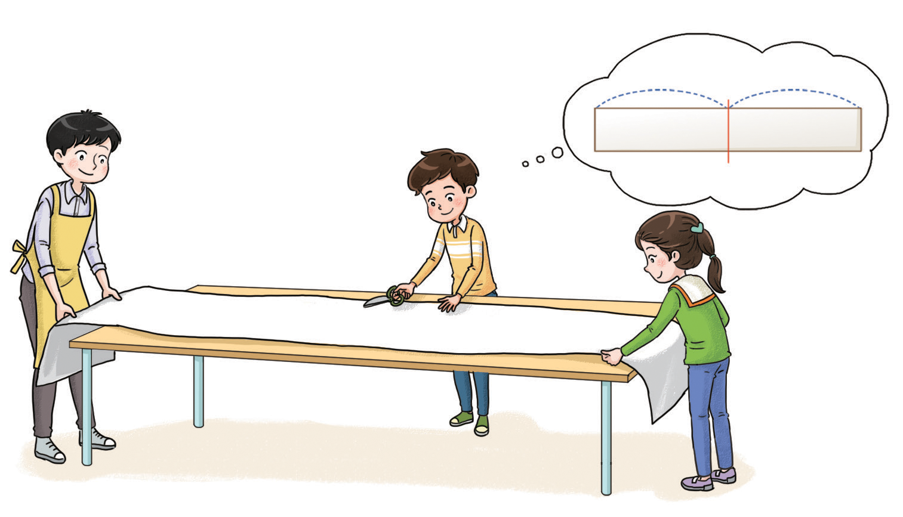

황토 염색 체험에 필요한 천 2.5 m를 두 사람이 똑같이 나누어 가지려고 합니다. 한 명이 가질 수 있는 천은 몇 m인지 알아봅시다.
물음 1
물음 2
물음 3
한 명이 가질 수 있는 천은 몇 m인지 구하는 식을 써 보세요.

2.5÷2
계산 결과를 어림해 보고, 어떻게 어림했는지 말해 보세요.
예
2.5는 2보다는 크고 4보다는 작으므로 몫은 1과 2 사이일 것입니다.
어떻게 계산하면 좋을지 말해 보세요.
예
분수의 나눗셈으로 바꾸어 계산합니다.